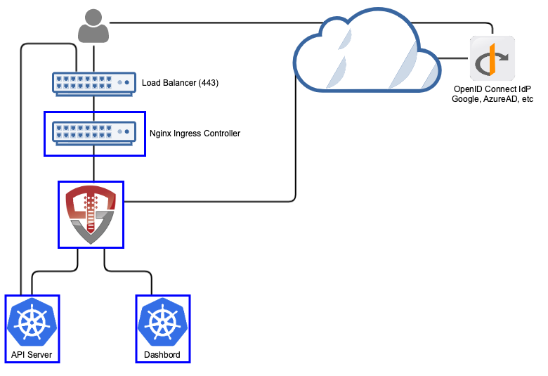
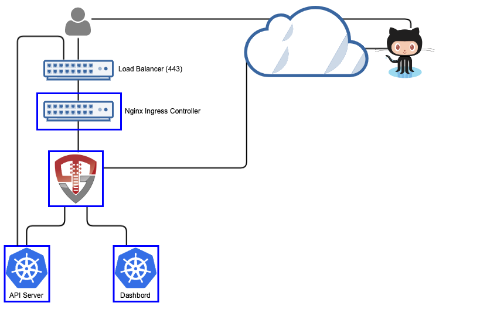

Deploying The Authentication Portal
The authentication portal is the best place to start. This guide is a step-by-step explanation of each of the components of the portal, what they do and how to configure them.
Deploying the Login Portal
These are the step-by-step instructions for deploying OpenUnison with Kubernetes. Each step provides some explanation, but with greater details linked out through this document. The goal of this section is to give you the deployment instructions as succinctly as possible, with supporting details provided in reference sections. OpenUnison can be deployed in multiple ways and its deployment will vary based on your cluster's configuration and needs. There are four steps to the deployment are:
| Deployment Phase | Description | Approximate Time |
|---|---|---|
| Pre-requisites | Deploy the Ingress controller and dashboard. |
This is dependent on how long it takes to deploy and validate your Ingress controller of choice and accompanying network infrastructure such as load balancers. |
| Site Specific Configuration | This is where you'll configure OpenUnison for your authentication source and for your infrastructure by configuring a Helm chart values.yaml and generating your configuration Secret |
Generally 5 - 30 minutes depending on if all your prerequisite are ready |
| Deploy the Portal | Use the ouctl tool to deploy your portal |
Less then 5 minutes |
| Optional - Integrating Your Cluster | If you're using OpenID Connect to integrate directly with your cluster, you'll need to configure your cluster to trust OpenUnison for authentication | Dependent on the Kubernetes distribution, usually less then five minutes |
In any OpenUnison deployment the most amount of time spent is on getting the networking for your cluster working and getting the right authentication configuration for your identity store. Once those are ready the rest of the deployment is very direct.
Pre-requisites
Ingress Controller
In order to use OpenUnison, you'll need to first have an Ingress controller deployed. While any controller should work, we have documented deployment steps for these controllers. If you need help deploying an additional type of controller, please open an issue and we'll be happy to help.
| Ingress Controller |
|---|
| Traefik |
| Gateway API |
| Istio |
| F5 NGINX |
| NGINX |
Once your Ingress controller is deployed, the next step is to deploy the dashboard.
Site Specific Configuration
This section is where you'll do the work of configuring OpenUnison for your cluster and spend the most time. The deployment steps are here, with links to detailed configuration options to guide you through the process.
There are three supported ways to deploy OpenUnison:
| Method | Benefits | Artifacts Required |
|---|---|---|
Using ouctl |
The ouctl utility automated the creation of Secret objects and deploys the helm charts for you. This utility will automatically remove corrupted installs and re-apply charts. It will also wait for deployments to become healthy before moving to the next chart. Finally, it can automate the installation of additional charts to aid in fleet deployments of customizations. |
[Download the ouctl utility] [Download Default values.yaml] |
ArgoCD Application |
ArgoCD is a powerful GitOps controller that can deploy and manage OpenUnison for you. Instead of deploying multiple Application objects for each chart, you can use a multi repo Application. see the Deploying with ArgoCD section for detailed instructions, you'll need to create the orchestra-secrets-source Secret |
[Download the ArgoCD Application object] |
| Manual Deployment | If you already have a workflow for deploying multiple Helm charts, you can use the manual deployment method to deploy the charts | [Download Default values.yaml] |
Once you have chosen how to deploy OpenUnison, the minimum configuration points are:
| Values Section | Decision Points | Notes |
|---|---|---|
enable_impersonation |
Determine if you want to integrate your cluster directly with OpenUnison using OpenID Connect (false), or use OpenUnison's integrated impersonating reverse proxy when interacting with the API server (true). In general, if you're working with an on-premises cluster this will be false. If you're using a hosted, or managed, cluster such as EKS or Civo this would by true. |
|
network |
This section describes how you will access OpenUnison and how OpenUnison will interact with your cluster | Host Names and Networking |
Authentication (One of activedirectory, oidc, github, or saml) |
How will OpenUnison authenticate users? This is covered in detail next. At least one option is required. | Choosing an Identity Source |
API Server Certificates
If you're using impersonation, you can skip this section. If you're connecting directly via OpenID Connect, then you'll need the CA certificate for either your API Server OR the load balancer for your API servers. Once you have this certificate, in PEM format, base64 encoded it and add it to the trusted_certs section of your values.yaml with the name k8s_master. This will tell OpenUnison which certificate to include in your kubectl configuration files. As an example:
Final Configuration steps
NOTE: While not required, you should update the k8s_cluster_name value in your values.yaml to have a descriptive label for your cluster.
Once you've chosen an identity source, return here to finish the installation.
Deploy the Portal
OpenUnison is deployed using a series of Helm Charts that cover different aspects of the deployment between configuration, integration with the API server, and the operator that manages certificates for you. You can deploy these charts manually, but either the ouctl command or using ArgoCD makes this much easier.
Deploy with ouctl
First, download ouctl for the correct platform. Next, download the OpenUnison helm repo:
The next step is to create a file with your secret in it for AD/LDAP, OIDC, or GitHub login. This file is NOT a Secret, just the value of your password/client secret/etc in the file. The ouctl utility will base64 encode the file and generate the Secret for you.
SECURITY NOTE
You shouldn't use the echo command to create this file for two important reasons:
- It adds an extra
\nat the end - It will store your secret information in your shell's history file
It's best to create this file manually and add the secret to it. NOTE: Do not base64 encode the data before putting it in this file. The ouctl command will handle that for you.
Finally, deploy the portal:
Assuming there are no issues, OpenUnison will be deployed and ready for access. The ouctl command is safe to re-run. If you want to update the secret, you can provide the -s again. If you just want to upgrade the charts, you can run ouctl without -s and it will just update the charts.
Deploying with ArgoCD
The OpenUnison charts include the argocd.argoproj.io/sync-wave annotation on all manifests to deploy them in the correct sequence. To simplify deployment, ArgoCD supports multiple repos in a single Application, allowing for each helm chart to be deployed. This allows you to easily add additional charts too, such as the EntraID chart or the cluster management chart for Namespace as a Service. Additionally, the default ArgoCD Application configuration tells ArgoCD not to overwrite the validating webhooks that the operator configures with certificates. This let's us continue to update OpenUnison directly from ArgoCD instead of using the ouctl command without having to first generate YAML manifests.
When configuring your values.yaml, add the following:
The openunison.auto_timestamp=false entry stops the helm charts from generating a new timestamp every minute so that ArgoCD can continuously synchronize the Application without the OpenUnison operator constantly reprocessing data. If you do need to force the operator to reprocess data, in case you want to replace a key as an example, update openunison.force_update in your values.yaml and commit. This will force the operator to re-run and regenerate keys.
Next, you'll need a git repository to store your values.yaml file in. You can't embed your values into your Application object because of how the CRD is constructed.
Once you have a git repository that will store your values.yaml, the next step is to generate your orchestra-secrets-source Secret. These instructions are the same as the manual instructions. OpenUnison separates secret information out of it's configurations. No secret data should ever be stored in a Helm chart. A Secret object needs to be created to store OpenUnison's secret data (such as passwords, keys, and tokens). The operator will pull this Secret in when generating OpenUnison's configuration.
The below example uses random data. Do NOT use this exact Secret, create your own random data for the values
that don't contain an &. A password generator is a great way to generate this data.
Additionally, each authentication method will require its own secret data so this Secret will need to be updated.
apiVersion: v1
type: Opaque
metadata:
name: orchestra-secrets-source
namespace: openunison
data:
# only needed if the kubernetes dashboard is enabled
#K8S_DB_SECRET: UTJhQzVNNjBMbWljc3Y0UEphYVhsWlRRbw==
unisonKeystorePassword: SGRVSEg1c1Z0ZUdaTjFxdjJEUHlnYk1wZQ==
kind: Secret
Once your Secret is deployed and your values.yaml is stored in a git repository, the last step is to customize the OpenUnison Application object. You can get the latest chart versions from Artifact Hub. Next, you'll need to update the last two entries in spec.sources. For both entries repoURL must point to your git repo storing the values yaml:
For the values listing, path is the relative path in the repository where you want ArgoCD to look for files. In this instance, our values file is in the repository's /userauth directory.
Finally, for the other entries in spec.sources update the valuesFile to $values/full/path/to/values.yaml. In this example the values.yaml file is in /userauth, so each chart's valuesFiles goes to $values/userauth/values.yaml.
If you want to add additional charts, insert them before the second to last in the spec.sources list.
Once your Application is updated it can be deployed. If there's a synchronization error because webhooks haven't yet been deployed, it usually means there's a delay between the app=openunison-openunison Pods being ready and being able to process connections. A re-sync generally clears this issue.
With OpenUnison being deployed, you can move on to finishing the deployment.
Finishing Your Deployment
If you're going to integrate your cluster with OpenID Connect (most on-prem clusters will be integrated this way), the final step is to enable SSO with your Kubernetes cluster. If you configured enable_impersonation to true, skip this step.
Finally, login to your portal by going to https://network.openunison_host/, where network.openunison_host is the host name you specified in your values.yaml. If everything was setup correctly, you can now start working with your cluster!
Learn to use the OpenUnison Login Portal by exploring our user guide.
Integrating Your Kubernetes Cluster
If you're running on a managed cluster such as EKS, AKS, or GKE, you can skip this section.
To get the correct flags for your API server, run
If you're using the certificate generated by OpenUnison, you can retrieve it with:
kubectl get secret ou-tls-certificate -n openunison -o json | jq -r '.data["tls.crt"]' | base64 -d > /path/to/ou-ca.pem
Next, depending on your distribution, update your cluster's command line parameters with the output for describing the above ConfigMap.
If you do not need to explicitly trust a certificate, skip --oidc-ca-file. Once you're API servers restart, you should be able to use
either the dashboard or the kubectl API.
Choosing an Identity Source
Before starting the deployment process, choose how you want to authenticate your users. This is how OpenUnison will authenticate users, regardless of how OpenUnison integrates with your cluster. Each authentication options includes prerequisite that must be collected before deployment. Below are the available options:
| Option | Notes |
|---|---|
| Active Directory / LDAP | Popular with enterprises and on-premises deployments |
| OpenID Connect | Most common integration method. Useful with common providers such as Okta, Azure Active Directory, and Google. |
| GitHub | Useful for when you want to drive management based on your GitHub organizations and teams |
| SAML2 | Most often used in legacy environments with Microsoft's Active Directory Federation Services (ADFS) |
At the end of each section is a link to bring you back to the deployment.
Active Directory / LDAP
Using Active Directory or LDAP, OpenUnison collects your user's username and password then uses an LDAP bind operation against your Active Directory or LDAP server. This is common in many enterprises. The main advantage to this approach is it's simplicity. It does however require that the user's password move through OpenUnison (and your cluster).

To get started, you will need:
- The full distinguished name and password for a service account. This account needs no privileges. The distinguished name will look something like
cn=serviceaccount,cn=Users,dc=domain,dc=com - The host and port for your domain controllers OR the domain that you want to query. OpenUnison doesn't know how to talk to multiple hosts, so you will either need to keep your domain controllers behind a load balancer or if your cluster is connected via DNS to the domain OpenUnison can use SRV records to discover domain controllers
- The CA certificate for your domain controllers
Your domain controllers MUST have TLS enabled and running. Most Active Directory deployments will not allow authentication over a plain text connection.
The following attributes must be available to OpenUnison:
| Attribute | Description | Example |
|---|---|---|
| samAccountName | The user's login ID | mmosley |
| memberOf | The DN of all groups the user is a member of | cn=group1,cn=users,dc=domain,dc=com |
Additionally, users may also have:
| Attribute | Description | Example |
|---|---|---|
| givenName | User's first name | Matt |
| sn | User's last name | Mossley |
| User's email address | mmosley@tremolo.dev | |
| displayName | The user's display name | Matt Mosley |
Any of these attribute names can be changed by customizing the MyVirtualDirectory configuration used by OpenUnison.
Once all the prerequisites have been gathered, uncomment the activedirectory section of your values.yaml and update accordingly:
active_directory:
base: cn=users,dc=ent2k12,dc=domain,dc=com
host: "192.168.2.75"
port: "636"
bind_dn: "cn=Administrator,cn=users,dc=ent2k12,dc=domain,dc=com"
con_type: ldaps
srv_dns: "false"
The detailed explanation of each setting is below:
| Property | Description |
|---|---|
| active_directory.base | The search base for Active Directory |
| active_directory.host | The host name for a domain controller or VIP. If using SRV records to determine hosts, this should be the fully qualified domain name of the domain |
| active_directory.port | The port to communicate with Active Directory |
| active_directory.bind_dn | The full distinguished name (DN) of a read-only service account for working with Active Directory |
| active_directory.con_type | ldaps for secure, ldap for plain text |
| active_directory.srv_dns | If true, OpenUnison will lookup domain controllers by the domain's SRV DNS record |
The secret file used with the ouctl command will contain the password for your service account. If configuring OpenUnison manually, update the orchestra-secrets-source Secret with a key called AD_BIND_PASSWORD that contains the base64 encoded password for the service account named
in activedirectory.bind_dn.
RBAC Bindings
If you can populate groups in Active Directory for Kubernetes, you can use those groups for authorization via OpenUnison. OpenUnison will provide all of a user's groups via the id_token supplied to Kubernetes. The groups claim is a list of values, in this case the Distinguished Names of the user's groups. As an example, I created a group in AD called k8s_login_ckuster_admins in the Users container of my ent2k12.domain.com domain. This means the group will be CN=k8s_login_ckuster_admins,CN=Users,DC=ent2k12,DC=domain,DC=com (you can get the exact name of the group from the distinguishedName attribute of the group in Active Directory). To authorize members of this group to be cluster administrators, we create a ClusterRoleBinding:
kind: ClusterRoleBinding
apiVersion: rbac.authorization.k8s.io/v1
metadata:
name: activedirectory-cluster-admins
subjects:
- kind: Group
name: CN=k8s_login_ckuster_admins,CN=Users,DC=ent2k12,DC=domain,DC=com
roleRef:
kind: ClusterRole
name: cluster-admin
apiGroup: rbac.authorization.k8s.io
Once completed, continue to Deploy the Portal to finish the OpenUnison deployment.
OpenID Connect
The OpenID Connect protocol is a popular protocol used by Google, Okta, and many others. It is a well documented standard that is usually the first choice of most SSO implementations. While Kubernetes can integrate directly with most OpenID Connect providers, those providers won't generate a kubectl configuration, support the dashboard, or support other cluster management applications. OpenUnison will support this for your without having to make multiple integrations with your identity provider.
These following steps will work with any OpenID Connect compatible identity provider. Here are detailed instructions for specific implementations:

To get started, you'll need:
- Your identity provider's issuer
- A client id
- A client secret
- Claims from your identity provider
The following are required for OpenUnison:
| Attribute | Description | Example |
|---|---|---|
| sub | The user's unique id | mmosley |
| groups | The DN of all groups the user is a member of | admins,users |
Additionally, users may also have:
| Attribute | Description | Example |
|---|---|---|
| given_name | User's first name | Matt |
| family_name | User's last name | Mossley |
| User's email address | mmosley@tremolo.dev | |
| name | The user's display name | Matt Mosley |
You'll need to provide a redirect URL to your identity provider. The URL will be https://[network.openunison_host]/auth/oidc. For instance if your network.openunison_host
is k8sou.domain.com your direct URL is https://k8sou.domain.com/auth/oidc.
For previously tested identity providers and how to configure them, see the Identity Providers section of the documentation.
To configure OpenID Connect for authentication to your Kubernetes cluster, uncomment the oidc section of the base values.yaml file:
oidc:
client_id: abcdefgh
issuer: https://dev-XXXX.okta.com/
user_in_idtoken: false
domain: ""
scopes: openid email profile groups
claims:
sub: sub
email: email
given_name: given_name
family_name: family_name
display_name: name
groups: groups
You can customize these values based on your identity provider's needs.
| Property | Description |
|---|---|
| oidc.client_id | The client ID registered with your identity provider |
| oidc.auth_url | Your identity provider's authorization url |
| oidc.token_url | Your identity provider's token url |
| oidc.domain | An email domain to limit access to |
| oidc.user_in_idtoken | Set to true if the user's attributes (such as name and groups), is contained in the user's id_token. Set to false if a call to the identity provider's user info endpoint is required to load the full profile |
| oidc.userinfo_url | If oidc.user_in_idtoken is false, the user_info endpoint for your identity provider |
| oidc.scopes | The list of scopes to include, may change based on your identity provider |
| oidc.claims.sub | If specified, the claim from the id_token to use for the sub attribute |
| oidc.claims.email | If specified, the claim from the id_token to use for the mail attribute |
| oidc.claims.givenName | If specified, the claim from the id_token to use for the givenName attribute |
| oidc.claims.familyName | If specified, the claim from the id_token to use for the sn attribute |
| oidc.claims.displayName | If specified, the claim from the id_token to use for the dipslayName attribute |
| oidc.claims.groups | If specified, the claim from the id_token to use for the groups attribute |
If you prefer to keep your identity provider's client_id as a Secret, store it as OIDC_CLIENT_ID in the orchestra-secrets-source Secret in the openunison namespace and set oidc.client_id_is_secret: true in your values.yaml. The client_id will be read from the Secret instead of being stored directly in the configuration object.
The secret file used with the ouctl command will contain the client secret. If you want to configure OpenUnison manually, add OIDC_CLIENT_SECRET to the orchestra-secrets-source Secret in the openunison namespace with the base64 encoded client secret from your identity provider.
If using echo DATA | base64 to encode your Secret, make sure to use -n to remove the excess carriage return, ie echo -n DATA | base64. Your authentication will fail otherwise.
RBAC Bindings
The groups claim will be passed to Kubernetes to support RBAC bindings. You can create RoleBinding and ClusterRoleBinding objects based on this attributes. For
example if you have a group called k8s-admins you can make those users with that group a cluster admin with:
kind: ClusterRoleBinding
apiVersion: rbac.authorization.k8s.io/v1
metadata:
name: activedirectory-cluster-admins
subjects:
- kind: Group
name: k8s-admins
roleRef:
kind: ClusterRole
name: cluster-admin
apiGroup: rbac.authorization.k8s.io
Once completed, continue to Deploy the Portal to finish the OpenUnison deployment.
GitHub
GitHub is one of the most popular places to store directory your code. It's also got a powerful identity system that supports SSO and organizing access to your code. OpenUnison can leverage this system to provide access to your Kubernetes cluster, using your teams and memberships in RBAC bindings.

To get started, you'll need to create an OAuth app under your organization's Developer Settings. You'll need to provide an Authorization callback URL,
which is https://[network.openunison_host]/auth/github. For instance if your network.openunison_host is k8sou.domain.com your callback URL is
https://k8sou.domain.com/auth/github.
Once created, you'll need your client id and a client secret. The client id is added with a list of authorized teams to your values.yaml:
It's very important to specify at least one team, otherwise anyone on GitHub will have access to your cluster! GitHub doesn't provide any authorization
for your OAuth apps, that's left to you. Membership is specified in the form Organization/Team where Organization/ means all teams in that organization.
You can specify multiple teams by commas.
| Property | Description |
|---|---|
| github.client_id | The client id from your OAuth2 application configuration |
| github.teams | A comma separated list of authorized teams and organizations. An organization is listed in the format OrgName/ and a team in the format OrgName/TeamName |
The secret file used with the ouctl command will contain the GitHub client secret. If configuring OpenUnison manually, add GITHUB_SECRET_ID to the orchestra-secrets-source Secret in the openunison namespace with the base64 encoded client secret from your OAuth app.
RBAC Bindings
Kubernetes will see your user's organizations and teams as groups. To authorize users based on these groups, list them in your RBAC policies as groups with organizations being in the format OrgName/ and teams being the format OrgName/TeamName. To authorize members of team TremnoloSecurity/Owners to be cluster administrators, we create a ClusterRoleBinding:
kind: ClusterRoleBinding
apiVersion: rbac.authorization.k8s.io/v1
metadata:
name: github-cluster-admins
subjects:
- kind: Group
name: TremoloSecurity/Owners
roleRef:
kind: ClusterRole
name: cluster-admin
apiGroup: rbac.authorization.k8s.io
Once completed, continue to Deploy the Portal to finish the OpenUnison deployment.
SAML2
SAML2 is a popular user federation protocol, especially in enterprises. OpenUnison can integrate with your enterprise's SAML2 identity provider for users and groups. If you want to test with a SAML2 identity provider, but don't have one you can use Tremolo Security's testing identity provider (requires registration).
To get started, you'll need either the SAML2 metadata URL for your identity provider or the XML of your SAML2 identity provider. For instructions for specific identity providers, see the Identity providers section of the documentation.
To deploy OpenUnison with SAML2 support, uncomment the saml2 section of the base values.yaml:
Here are the options for the saml section:
| Property | Description |
|---|---|
| saml.idp_url | The url to your identity provider's saml2 metadata. If not using a metadata url, set this to an empty string "" |
| saml.metadata_xml_b64 | Base64 encoded metadata. Will only be used if idp_url is an empty string |
Your identity provider must supply the following attributes:
The following attributes must be available to OpenUnison:
| Attribute | Description | Example |
|---|---|---|
| uid | The user's login ID | mmosley |
| memberOf | The DN of all groups the user is a member of | cn=group1,cn=users,dc=domain,dc=com |
Additionally, users may also have:
| Attribute | Description | Example |
|---|---|---|
| givenName | User's first name | Matt |
| sn | User's last name | Mossley |
| User's email address | mmosley@tremolo.dev | |
| displayName | The user's display name | Matt Mosley |
To stand up your identity provider, you'll need to use OpenUnison's saml2 metadata URL. The url is https://network.openunison_host/auth/forms/saml2_rp_metadata.jsp.
For instance if your network.openunison_host is k8sou.domain.com the metadata URL will be https://k8sou.domain.com/auth/forms/saml2_rp_metadata.jsp.
There is no client secret with SAML2, so you'll skip the -s parameter with the ouctl command.
RBAC Bindings
The memberOf attribute from your assertions will be included as the groups claim in your id_token. You can use any value from the memberOf attribute in
your RBAC bindings.
Once completed, continue to Deploy the Portal to finish the OpenUnison deployment.
Headlamp Configuration and Plugins
Headlamp deploys with OpenUnison automatically. There's no separate chart to install or deploy. The charts for OpenUnison deploy Headlamp with:
- End to End TLS - Connections from OpenUnison to Headlamp are encrypted out of the box, no need for special configuration.
- Hardened Charts - Headlamp is deployed with the same security posture as OpenUnison. All privileges are revoked, containers are read-only, and the
ServiceAccounthas no privileges. - OpenUnison Plugin - A pre-built plugin to support knowing who you logged in as and which namespaces you have access to.
- Plugins - You can configure plugins to be deployed to your Headlamp implementation.
Configuring Plugins
When deploying Headlamp with OpenUnison, you can configure plugins the same way as with the generic Headlamp charts, with one change: the config and pluginManager blocks go under headlamp in your values.yaml. For instance, to configure the cert-manager and AI assistant plugins your yaml would look like:
headlamp:
config:
watchPlugins: true
pluginsManager:
enabled: true
configContent: |
plugins:
- name: cert-manager
source: https://artifacthub.io/packages/headlamp/headlamp-plugins/headlamp_cert-manager
version: 0.1.0
dependencies: []
- name: ai-assistant
source: https://artifacthub.io/packages/headlamp/headlamp-plugins/headlamp_ai_assistant
version: 0.1.0-alpha
installOptions:
parallel: true
maxConcurrent: 2
SECURITY WARNING ABOUT PLUGINS - Headlamp plugin configuration is stored in your browser's local storage. It is NOT centrally managed. This means that when you configure a plugin through Headlamp, it is not tied to your OpenUnison login. As an example, If mmosley logs into OpenUnison and configures the AI assistant with an API key for OpenAI, and then logs out but jjackson logs in to the same desktop she will be using the same OpenAI configuration. It also means that, as an administrator you can not enforce configuration rules. For instance, you can't keep a user from configuring OpenAI with the AI assistant, sending cluster information to OpenAI. Be very careful in deciding which plugins to enable until Headlamp supports centralized configuration.
Namespace Visibility
Headlamp, by default, performs all searches from the cluster level. This means when it lists workloads, it's search is at the cluster level. If your user only has access to specific namespaces, which is often the case with multi-tenant deployments, you need to tell Headlamp which namespaces are available. With the stock version of Headlamp, the only way to do this is to manually configure which namespaces are available in your local Headlamp configuration. OpenUnison includes a plugin to automate this for your users.
The OpenUnison plugin for Headlamp uses an API to determine which namespaces are visible to a user. NOTE this does not override RBAC, it only determines which namespaces are visible in Headlamp. If a user doesn't not have access to that Namespace based on the cluster's RBAC, they can not access it even if it's listed. When using the Namespace as a Service portal OpenUnison knows which namespaces you have access to, eliminating the need for you to build an API.
For users using the OpenUnison authentication portal, by default there's an API that will always return a list of all namespaces. This is similar behavior as the legacy Kubernetes Dashboard and provides the best user experience securely for the most use cases. There are additional methods for populating the namespaces filter in Headlamp.
Test Namespaces
If you don't have a way to know which namespaces a user should have access to based on groups or some other mechanism, OpenUnison can test each namespace on behalf of the user. To enable this version of the namespaces api:
headlamp:
namespace_api:
all_namespaces:
enabled: false
test:
enabled: true
# list the groups that will be cluster-admins
admin_groups:
- CN=k8s-cluster-administrators,CN=Users,DC=ent2k22,DC=tremolo,DC=dev
List out which groups will be admins so that way you can skip testing for them. Note that because this method does a test of every namespace it can get expensive if you have a large number of namespaces.
No Namespaces
If all of your users are cluster administrators, you can skip the namespaces api entirely and return an empty list with the following configuration change.
Custom API
Finally, if you do have a way to determine which namespaces are available for a user, the best way to do that is to build an Application. For example, the following Application will limit namespaces to those built of the user's username:
---
apiVersion: openunison.tremolo.io/v1
kind: Application
metadata:
name: custom-apis
namespace: openunison
spec:
azTimeoutMillis: 3000
isApp: true
urls:
- hosts:
- "#[OU_HOST]"
filterChain:
- className: com.tremolosecurity.proxy.filters.JavaScriptFilter
params:
javaScript: |-
// imports
GlobalEntries = Java.type("com.tremolosecurity.server.GlobalEntries");
HashMap = Java.type("java.util.HashMap");
System = Java.type("java.lang.System");
JwtClaims = Java.type("org.jose4j.jwt.JwtClaims");
JsonWebSignature = Java.type("org.jose4j.jws.JsonWebSignature");
ProxyConstants = Java.type("com.tremolosecurity.proxy.util.ProxyConstants");
AlgorithmIdentifiers = Java.type("org.jose4j.jws.AlgorithmIdentifiers");
Attribute = Java.type("com.tremolosecurity.saml.Attribute");
ArrayList = Java.type("java.util.ArrayList");
// initialize your filter
function initFilter(config) {
}
// create the list of namespaces
function doFilter(request,response,chain) {
var allowedNamespaces = [];
var userData = (request.getSession().getAttribute(ProxyConstants.AUTH_CTL)).getAuthInfo();
var sub = userData.getAttribs().get("sub").getValues().get(0);
allowedNamespaces.push(sub + '-ns');
response.getWriter().print(JSON.stringify({"namespaces":allowedNamespaces}));
}
uri: "/apis/namespaces"
proxyTo: ""
authChain: login-service
azRules:
- scope: dn
constraint: o=Tremolo
cookieConfig:
sessionCookieName: tremolosession
domain: "#[OU_HOST]"
secure: true
httpOnly: true
logoutURI: "/logout"
timeout: 900
keyAlias: session-unison
Then, update your values to disable the all_namespaces api:
Disabling Headlamp
In order to disable Headlamp, add the following to your values.yaml:
Detailed Configuration
Host Names and Networking
OpenUnison is a web application that can host multiple systems routed by host name. If you ever worked with web servers, this is similar to how virtual sites work. When OpenUnison receives a request, it routes the request based on it's internal configuration to the right application using the request's host name and URI path. To prepare for using OpenUnison to manage access to your cluster, you'll need at least one host name for the portal and the built in headlamp service.
If you're running OpenUnison on a managed cluster like EKS or GKE, you'll need a third host name specifically for the api service that kubectl will use.
All of these host names must be different
This diagram shows the relationships between the host names used to access OpenUnison, your Ingress controller, and the load balancer. In this example, https://k8sou.domain.com is the URL for the OpenUnison portal. The dashboard is accessed using https://k8sdb.domain.com, and the API server is accessed using https://k8sapi.domain.com. All three URL's host names point to the same IP address (a.b.c.d), which is assigned to the load balancer.
When your browser goes to https://k8sou.domain.com/ it's going to a load balancer that forwards the traffic to your Ingress
controller. Depending on your setup your load balancer may be a TLS termination point. The Ingress controller is a TLS termination
point that decrypts your request and forwards it to the openunison-orchestra Service which then forwards the packets to the
openunison-orchestra Pod. The Helm chart sets all this up for you, so don't worry about having to wire everything yourself.
Headlamp works in a similar way. Going to https://k8sou.domain.com/headlamp/ goes through the same process as above. Once OpenUnison has authenticated you, it forwards
all requests to Headlamp with either your id_token or an Impersonation
header with your user's information. Headlamp runs without privileges, and without it's own Ingress object. All traffic
runs through OpenUnison's reverse proxy.
When using OpenUnison with a managed cluster, such as EKS, you can enable impersonation for authentication to your cluster.
This scenario replaces your API server's host with the value from network.api_server_host routing all API requests through
OpenUnison. OpenUnison authenticates your id_token and then injects Impersonation headers into each request. This allows
you to authenticate to your cluster without getting cloud IAM credentials. This process will be transparent to your tools, such
as kubectl.
No DNS Server?
If you don't have a DNS server where you can setup host names, try using nip.io. This service will take any host name with an IP and return the IP address for DNS resolution. For instance k8sou.apps.192-168-2-119.nip.io will resolve to 192.168.2.119.
No Load Balancer?
It's not uncommon for development releases to not have a load balancer available. You can configure your Ingress controller to listen directly on ports 80 and 443. Each Ingress controller's documentation provides instructions on how to run the controller this way.
Network Configuration Options
| Property | Description |
|---|---|
| network.openunison_host | The host name for OpenUnison. This is what user's will put into their browser to login to Kubernetes |
| network.dashboard_host | Optional, only required if dashboard.enabled=true The host name for the dashboard. This is what users will put into the browser to access to the dashboard. NOTE: network.openunison_host and network.dashboard_host Both network.openunison_host and network.dashboard_host MUST point to OpenUnison |
| network.api_server_host | The host name to use for the api server reverse proxy. This is what kubectl will interact with to access your cluster. NOTE: network.openunison_host and network.dashboard_host |
| network.k8s_url | The URL for the Kubernetes API server |
| network.session_inactivity_timeout_seconds | The number of seconds of inactivity before the session is terminated, also the length of the refresh token's session |
| network.createIngressCertificate | If true (default), the operator will create a self signed Ingress certificate. Set to false if using an existing certificate or LetsEncrypt |
| network.force_redirect_to_tls | If true, all traffic that reaches OpenUnison over HTTP will be redirected to HTTPS. Defaults to true. Set to false when using an external TLS termination point, such as an istio sidecar proxy |
| network.ingress_type | The type of Ingress object to create. nginx and istio is supported |
| network.ingress_annotations | Annotations to add to the Ingress object |
| network.ingress_certificate | The certificate that the Ingress object should reference |
| network.istio.selectors | Labels that the istio Gateway object will be applied to. Default is istio: ingressgateway |
Return to Site Specific Configuration
Network Policies
The orchestra helm chart will create NetworkPolicy objects to lock down all network access to the OpenUnison pods, limiting it to:
- Access from the
Ingresscontroller or gateway - Access from within the
openunisonnamespace - Access from the monitoring system's namespace
- Access from the API server
Limiting access to the OpenUnison pods can be important, especially when running OpenUnison in impersonation mode, to cut down attacks from inside the cluster. Access from the API server is needed because there are validating webhooks hosted on OpenUnison for validating configuration objects that are created.
Enable the creation of policies by setting network_policies.enabled to true. This will disable all inbound access to OpenUnison pods from outside
of the OpenUnison namespace. Then enable which namespaces you want to create ingress NetworkPolicy objects for:
network_policies:
enabled: true
ingress:
enabled: true
labels:
app.kubernetes.io/name: ingress-nginx
monitoring:
enabled: true
labels:
app.kubernetes.io/name: monitoring
apiserver:
enabled: true
labels:
app.kubernetes.io/name: kube-system
NOTE : Every distribution has its own mechanism for running the API server and enabling access from the API server for webhooks. If you run into errors while deploying the orchestra-login-portal chart such as:
message: "Helm install failed for release openunison/portal with chart orchestra-login-portal@2.3.78:
36 errors occurred:\n\t* Internal error occurred: failed calling webhook \"applications-openunison.tremolo.io\":
failed to call webhook: Post \"https://openunison-orchestra.openunison.svc:443/k8s/webhooks/v1/applications?timeout=30s\":
context deadline exceeded\n\t* Internal error occurred: failed calling webhook
\"applications-openunison.tremolo.io\": failed to call webhook: Post \"https://openunison-orchestra.openunison.svc:443/k8s/webhooks/v1/applications?timeout=30s\":
dial tcp 192.168.8.79:8443: i/o timeout\n\t*
it generally means that you have NetworkPolicy objects in the openunison namespace, but need to create a specific policy for your distribution.
Managed Clusters
Most hosted clusters do not support configuring an OpenID Connect identity provider. The easiest way to manage external access to these clusters is by
enabling Impersonation in OpenUnison. Using Impersonation, OpenUnison provides a reverse proxy in front of your API server, enabling external authentication
without having to configure an OpenID Connect identity provider. To enable impersonation, set enable_impersonation to true in your values.yaml and make sure
to include a host name for openunison.api_server_host.
kubectl exec/cp/port-forward
Prior to Kubernetes 1.31, the kubectl exec, cp, proxy, and port-forward commands use a protocol called SPDY. This protocol was deprecated by Google in 2016. Very few modern systems still support SPDY. If using OpenUnison with a managed cluster like EKS, GKE, or AKS, OpenUnison supports SPDY by integrating Tremolo Security's OIDC Proxy.
impersonation:
use_jetstack: true
jetstack_oidc_proxy_image: ghcr.io/tremolosecurity/kube-oidc-proxy:latest
explicit_certificate_trust: true
| Property | Description |
|---|---|
| impersonation.use_jetstack | if true, the operator will deploy an instance of JetStack's OIDC Proxy (https://github.com/jetstack/kube-oidc-proxy). Default is false |
| impersonation.jetstack_oidc_proxy_image | The name of the image to use |
| impersonation.explicit_certificate_trust | If true, oidc-proxy will explicitly trust the tls.crt key of the Secret named in impersonation.ca_secret_name. Defaults to true |
| impersonation.ca_secret_name | If impersonation.explicit_certificate_trust is true, the name of the tls Secret that stores the certificate for OpenUnison that the oidc proxy needs to trust. Defaults to ou-tls-secret |
| impersonation.resources.requests.memory | Memory requested by oidc proxy |
| impersonation.resources.requests.cpu | CPU requested by oidc proxy |
| impersonation.resources.limits.memory | Maximum memory allocated to oidc proxy |
| impersonation.resources.limits.cpu | Maximum CPU allocated to oidc proxy |
The terminal in the dashboard will work without issue, since the dashboard uses websockets instead of SPDY.
OpenUnison Resource Configuration
The helm chart can be used to customize openunison's resource utilization and limits and manage access to tokens for communicating with the API server. You can also specif node selector labels to limit which nodes your pods run on.
TokenRequest API
Starting in Kubernetes 1.20 all tokens mounted into pods are projected TokenRequest API tokens. These tokens are only valid for the life of the pod and have an expiration (though it is a year into the future). OpenUnison can be configured to use shorter lived tokens. When using the shorter lived tokens, OpenUnison will reload them when the tokens expire.
services:
enable_tokenrequest: true
token_request_audience: "https://kubernetes.default.svc.cluster.local"
token_request_expiration_seconds: 600
node_selectors: []
Here are the detailed configuration options:
| Property | Description |
|---|---|
| services.enable_tokenrequest | If true, the OpenUnison Deployment will use the TokenRequest API instead of static ServiceAccount tokens. |
| services.token_request_audience | The audience expected by the API server |
| services.token_request_expiration_seconds | The number of seconds TokenRequest tokens should be valid for, minimum 600 seconds |
| services.node_selectors | annotations to use when choosing nodes to run OpenUnison, maps to the Deployment nodeSelector |
| services.pullSecret | The name of the Secret that stores the pull secret for pulling the OpenUnison image |
| services.resources.requests.memory | Memory requested by OpenUnison |
| services.resources.requests.cpu | CPU requested by OpenUnison |
| services.resources.limits.memory | Maximum memory allocated to OpenUnison |
| services.resources.limits.cpu | Maximum CPU allocated to OpenUnison |
Customizing The OpenUnison Object
You can customize additions to the openunison object generated by the orchestra helm chart. This section lets you specify additional environment
properties for OpenUnison, secrets to load, and specify a custom HTML image.
openunison:
replicas: 1
non_secret_data:
PROMETHEUS_SERVICE_ACCOUNT: system:serviceaccount:monitoring:prometheus-k8s
SHOW_PORTAL_ORGS: "true"
secrets: []
html:
image: docker.lab.tremolo.dev/nginx
enable_provisioning: false
az_groups: []
Authorizing Access To Your Cluster
The default implementation of OpenUnison authorizes anyone to authenticate to your cluster and leaves authorization to your RBAC objects. This may not be the desired behavior if you know that only users in a certain group should have access to a cluster at all. For example, if a cluster was built for the payments team, then developers on the marketing application shouldn't have access to your cluster at all.
To authorize access to the portal, and your cluster, add the authorized groups to openunison.az_groups in your values.yaml. The group names
will be the same as how you would specify them in an RBAC binding.
Detailed configuration options:
| Property | Description |
|---|---|
| openunison.replicas | The number of OpenUnison replicas to run, defaults to 1 |
| openunison.non_secret_data | Add additional non-secret configuration options, added to the non_secret_data section of the OpenUnison object |
| openunison.secrets | Add additional keys from the orchestra-secrets-source Secret |
| openunison.html.image | A custom NGINX image for the HTML frontend for OpenUnison's apis. |
| openunison.enable_provisioning | If true, enables openunison's provisioning and audit database. |
| openunison.az_groups | List of groups to authorize access for this cluster |
Integrating Other Applications
OpenUnison can support the authentication for your entire environment, not just Kubernetes! Take a look at our guides for well known applications. Also check out our documentation for SSO application integration.
Alternate Deployment Methods
Manual Deployment
Base Configuration
The base configuration deploys the groundwork for running OpenUnison. OpenUnison is a powerful authentication and automation platform that can be used with all of your cluster applications and APIs. We wanted to make this complexity as easy as possible to manage so we encoded most of the deployment and validation steps in automation technologies. You'll need helm version 3+ to finish the deployment.
Create the OpenUnison namespace:
First, create the Namespace that will host OpenUnison. If using Istio or another Ingress controller that requires the Namespace to be labeled, now is a good time to apply those labels.
Setup the helm repo with the charts:
Add OpenUnison's Helm repos to your system. We host these repos on our own services behind our certificate.
Install the operator
Next, install the operator. The operator is responsible for generating OpenUnison's configuration and consolidating certificates and keys into a central keystore used by OpenUnison. You can customize the operator's chart for your environment, but most deployments can use the defaults.
Wait until the operator pod is running.
while [[ $(kubectl get pods -l app=openunison-operator -n openunison -o 'jsonpath={..status.conditions[?(@.type=="Ready")].status}') != "True" ]]; do echo "waiting for operator pod" && sleep 1; done
Create a Secret that will be used for storing secret information like passwords and shared secrets.
OpenUnison separates secret information out of it's configurations. No secret data should ever be stored in a Helm chart. A Secret object needs to be created to store OpenUnison's secret data (such as passwords, keys, and tokens). The operator will pull this Secret in when generating OpenUnison's configuration.
The below example uses random data. Do NOT use this exact Secret, create your own random data for the values
that don't contain an &. A password generator is a great way to generate this data.
Additionally, each authentication method will require its own secret data so this Secret will need to be updated.
apiVersion: v1
type: Opaque
metadata:
name: orchestra-secrets-source
namespace: openunison
data:
# only needed if the kubernetes dashboard is enabled
#K8S_DB_SECRET: UTJhQzVNNjBMbWljc3Y0UEphYVhsWlRRbw==
unisonKeystorePassword: SGRVSEg1c1Z0ZUdaTjFxdjJEUHlnYk1wZQ==
kind: Secret
Deploy the Portal
Install the orchestra helm chart
First, install the orchestra chart, which does the configuration check and starts the openunison Pod.
If this deployment fails, it's likely from a misconfiguration of your values.yaml. See troubleshooting your orchestra deployment failure for instructions on how to debug.
Wait until the orchestra pods are running. There are validating webhook configurations that will fail in the last step if we don't wait.
while [[ $(kubectl get pods -l app=openunison-orchestra -n openunison -o 'jsonpath={..status.conditions[?(@.type=="Ready")].status}') != "True" ]]; do echo "waiting for pod" && sleep 1; done
Deploy Portal Configuration
Last step, deploy the orchestra login portal chart with the same values.yaml as the previous chart:
helm install orchestra-login-portal tremolo/orchestra-login-portal --namespace openunison -f /path/to/values.yaml
If you're going to integrate your cluster with OpenID Connect (most on-prem clusters will be integrated this way), the final step is to
enable SSO with your Kubernetes cluster. If you configured enable_impersonation to true, skip this step.
Finally, login to your portal by going to https://network.openunison_host/, where network.openunison_host is the host name you specified in your values.yaml. If everything was setup correctly, you can now start working with your cluster!
Learn to use the OpenUnison Login Portal by exploring our user guide.
Upgrading from 1.0.23 and Earlier
You can quickly upgrade your existing OpenUnison deployment without making significant changes to your deployment.
The Kubernetes Dashboard
The Kubernetes Dashboard was archived in January, 2026. We will continue to support it for some time as it will take some time for users to move to headlamp. This information is now considered legacy.
The Kubernetes Dashboard is a powerful and simple way to work with your cluster without having access to a command line. It is accessed securely by using the user's own permissions, with the dashboard its self having no permissions in your cluster. OpenUnison manages the login process for you, so there's no need to upload a kubectl configuration to the dashboard to make it work.
Starting with version 7 of the dashboard, it was broken into multiple containers. The default configuration tries to generate an internal ingress that is proxied in order to access the dashboard. OpenUnison makes this requirement mute, so there's some specific customizations to the dashboard's helm values file that needs to be made. You can download the values template. The reasons for the customizations are:
- Disable the Kong
Ingresscontroller from installing - Mount the certificates generated by OpenUnison to the web and api containers
- Disable the auth container
OpenUnison will be the reverse proxy that ties the web and api containers together, Kong is no longer needed. A certificate is generated for both the api and web containers so that all communications between OpenUnison and the dashboard are encrypted. Finally, the auth container is disabled because it doesn't support TLS at all and its functions are handled by OpenUnison removing the need for it to run.
You can further customize the dashboard deployment, then install:
helm repo add kubernetes-dashboard https://kubernetes.github.io/dashboard/
helm repo update
helm upgrade --install kubernetes-dashboard kubernetes-dashboard/kubernetes-dashboard --create-namespace --namespace kubernetes-dashboard -f /path/to/kubernetes-dashboard-values.yaml
or if you want to just deploy directly from our default values:
helm repo add kubernetes-dashboard https://kubernetes.github.io/dashboard/
helm repo update
helm upgrade --install kubernetes-dashboard kubernetes-dashboard/kubernetes-dashboard --create-namespace --namespace kubernetes-dashboard -f https://openunison.github.io/assets/yaml/kubernetes-dashboard-values.yaml
DO NOT SETUP AN INGRESS FOR YOUR DASHBOARD - OpenUnison takes care of that for you.
Upgrading an Existing Dashboard Deployment
If you've already deployed the Kubernetes Dashboard 2.7.0 (or helm chart version 6.x or lower) with OpenUnison, you can upgrade the deployment, otherwise you can skip to Site Specific Configuration. Upgrade your dashboard deployment by:
- Wiping the dashboard from your cluster, including the namespace it's running in
- Add
dashboard.new: trueto your OpenUnison values.yaml - Deploy the dashboard as per The Kubernetes Dashboard
- Redeploy OpenUnison
A new certificate will be generated for the dashboard, as will the correct configurations in OpenUnison.
Disabling Kubernetes Dashboard Support
If you wish to deploy without the Kubernetes Dashboard, add
to your values.yaml.
Having deployed the dashboard, next we'll deploy the base configuration for OpenUnison.